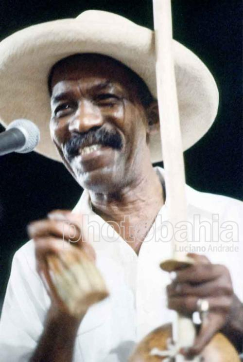

Camafeu de Oxóssi
Мастер игры на беримбау, певец. Ápio Patrocínio da Conceição, «смотритель» Пелуринью, он был человеком удачи. В игре такой же, как в любви, отсюда и имя Камафеу (Камея). Он родился 4 октября 1915 года в районе Гравата (Gravatá) в Сальвадоре, и вырос в Пелуринью. Сын Фаустино Жозэ и Марии Фирмины да Консейсау. Его отец был мастером-каменщиком, потомком африканцев.
Музыка вошла в его жизнь, когда он был еще юношей. Он рос в роде самбы, играл на беримбау, учил играть на нем туристов. Он был человеком, о котором рассказывают много легенд. Он стал директором школ самбы Só Falta Você, Deixa Pra Lá, Gato Preto, где он и пел песни самбы. В Меркаду Моделу он начал исполнять музыку капоэйры и ижеша (ijexá), играя на беримбау и привлекая клиентов. Так он стал успешным. В его лавке св. Георгия, открытой для смеха (aberto em riso ???), в окружении вещей и ритуалов obis e orobôs (?), он учил тайнам Баии. В 60-х годах, Федеральный университет штата Баия создал курс языка народа йоруба и Камафеу был одним из первых студентов. Он был приглашен поехать в Африку, представлять Баию в первом Фестивале Черных Искусств в Сенегале, вместе с Паштиньей и другими. Там он пел на языке йоруба для Ошум и Ошоми (ориша). Племянник Матери Аниньи и святой сын (filho de santo) Пресвятой Марии (Mãe Senhora), obá de Xangó do terreiro Axé Opô Afonjá излучал радость. Баиянец, известный по всей Бразилии, прообраз многих персонажей книг близкого друга, писателя Жоржи Амаду (Тереза Батиста, Дона Флор, Лавка чудес, Tieta do Agreste и др.). Его имя присутствует в десятках песен: в одной из них поется: „Камея, где Мария святого Петра“, написанна Мартинью да Вила (Martinho da Vila), другая написана Марией Алсина (Maria Alcina), а также Os Originais do Samba записали песни самбы в его честь.
Мастер игры на беримбау, батукейру, экс-президент Сыновей Ганди, Камафеу де Ошосси записал два альбома, один из которых Berimbau da Bahia (1968 г.) представляет песни капоэйры, некоторые из которых дошли до нас со времен рабства или парагвайской войны: “Volta do mundo, ê!/volta do mungo, ah!/ Eu estava lá em casa/sem pensá, sem maginá/e viero me buscá/para ajudar a vencê/a guerra do Paraguá/camarado ê/camaradinho/camarado…”. Эти песни полны воспоминаний о жизни рабов: «В то время у меня были деньги, camarado ê, ели за одним столом с Йойо, лежал в постели с Йайа…После того, как деньги кончились, женщина, ушла, камара" (“No tempo em que eu tinha dinheiro, camarado ê, comia na mesa com ioiô, deitava na cama com iaiá… Depois que dinheiro acabou, mulher que chega prá lá, camarado. camaradinho ê….”). В этих песнях поется о войне, рабстве, сражениях негров. Другие были импровизациями в неожиданных поворотах игры, они повторялись, приживались и становились классикой: “Bahia, minha Bahia,/Bahia do Salvador,/Quem não conhece capoeira/Não lhe pode dar valor//Todos podem aprender/General e até doutor”.. Со временем, хрипловатый голос уже не пел, но остался в истории и именах тех, с кем он жил в городе, который больше не существует.
«В лавке, среди своих ориша, ожерелий, амулетов и дымящихся благовоний, раздается его смех, восхваляющий Святого Георгия. Ошосси — король Кету (rei de Ketu), великий охотник. Камафеу управляет музыкой, песнями и танцами. Один из наиболее аутентичных баиянцев, хранителей народной культуры. Человек, обладающий житейской, народной мудростью, из тех, которые сохраняют прошлое и строят будущее», сказал Жоржи Амаду в книге «Баия всех святых». Он добавляет: „Композитор, мастер игры на беримбау, obá de Xangô, Osi Obá Aresá, сын Ошосси, любимец Госпожи (наверное, имеется ввиду Девы Марии), друг Menininha и Olga de Alaketu, смех, режущий лицо (o riso cortando o rosto), истинный друг. В свой лавке, в прозе, без компромиссов, в разговоре, который только начинается, как бывает только в Баие, без расписания, без определенных обязательств, сюда заходят рыбаки, дочь святого, художник Карибэ, участник afoxé, губернатор Штата, композитор Caymmi, пафосная беловолосая туристка, мулатка более sestrosa (?) и Пьер Верже, носитель знаний и тайн. Палатка Камафеу является местом встречи, дискуссионным столом и музыкальной консерваторией. В городе Сальвадор культура рождается, формируется и передается в очень странных местах, таких как палатки на рынке (…) Там, по дорогам Баии ходит Камафеу, непобедимый, как его святой воин. Приехать в Баию и не увидеть Камафеу — означает упустить лучшее в поездке. Он obá, хозяин, местре“.
Религиозный ритуал захоронения одного из самых известных фигур Баии: Apio Patrocínio da Silva, Камафеу де Ошосси состоялся 27 марта 1994 года Похороны прошли на кладбище Третьего Ордена Св. Франциска (Ordem Terceira do São Francisco), на них пришли друзья и поклонники, он был одним из главных культовых авторитетов афро-бразильской Баии. Камафеу был известна не только как владелец одного из самых известных ресторанов национальных блюд Баии, расположенного в Mercado Modelo, он также был Obá de Xangô в Terreiro Ilê Axe Opô Afonjá. Его почитали главные матери святых (mães-de-santo) и любили друзья Dorival Caymmi, Жилберту Жил и Жоржи Амаду. Камафеу долгое время болел, и в 78 лет умер от рака горла в больнице Aristides Maltez.
О том, как Апиу назвали Камафеу ди Ошосси рассказывает устное предание последователей кандомбле и Салвадорцев: «Камея (Camafeu) – это было и есть ювелирное украшение, которое носили светские дамы, пристегивая к воротникам своих платьев. Geralmente esse broche tinha como principal atrativo uma figura em relevo do rosto de uma senhora ou do seu esposo (? не смогла перевести). И жил-был торговец, которого звали Апиу, и который был сыном святого (filho-de-santo) в терейру Лье Аше Опо Афонжа и Ошосси, ориша охоты, леса и растений. Однажды он гулял с друзьями по Пелуринью, споткнулся, и, упав на землю увидел чудесную брош, именно такую камею. Она так сильно понравилась Апиу, что друзья прозвали его Камафеу ди Ошосси. Такое название он дал и своему ресторанчику».
В альбоме «Capoeira Popular Brasileira» Lobisomem есть песня, посвященная Камафеу
Camafeu do Mercado
Lá da cidade alta
Quando amanheceu
Avistei mercado modelo
Me lembrei de Camafeu
Camafeu de Oxóssi
Homem que muito sabia
As histórias, as tradições
E os mistérios da Bahia
Solista de berimbau
Cantador de capoeira
Legendário guardião
Da cultura brasileira
Colares, figas de Guiné
Tanta coisa ele vendia
Na barraca do mercado
São Jorge quem protegia
E o canto do Camafeu
Não era um canto qualquer
Era um canto mandingueiro
Com tempero e muito axé
Do elevador Lacerda
Eu voltei lá no passado
Me lembrei de Camafeu
Da barraca do mercado
Там, из верхнего города
На рассвете
Я видел Меркаду Моделу
Я вспомнил Камафеу
Камафеу ди Ошосси,
Человек, который знал очень много
Историй, традиций
И тайн Баии
Солист беримбау
Кантадор капоэйры
Легендарный хранитель
Бразильской культуры
Колье, амулеты Guiné (?)
Он продавал
На рынке, в лавке,
Которую защищал Св. Георгий,
И уголок Камафеу
Был не простым
Это был уголок mandingueiro
Com tempero e muito axé
У лифта Ласерда
Я ушел в прошлое
Я вспомнил Камафеу
из лавки на Меркаду
Источник: Блог Гутемберга
Перевод: Navarchik-Origami
*Дети Ганди – афоше-движение, последователей идей Ганди о мире и ненасилии.
Афоше (Afoxé) – также называется уличным кандомбле. Это процессия „кортеж“, которая принимает участие в уличных парадах. Считается проявлением афро-бразильской культуры, корнями уходящей к народу йоруба. Члены этого «блока» обязательно принадлежат к какому-нибудь терейру кандомбле. Слово «Афоше» происходит из языка йоруба. По словам Antonio Risério, афоше значит оглашение того, что должно произойти (проверьте правильно ли перевела: Segundo Antonio Risério, afoxé quer dizer o enunciado que faz acontecer).